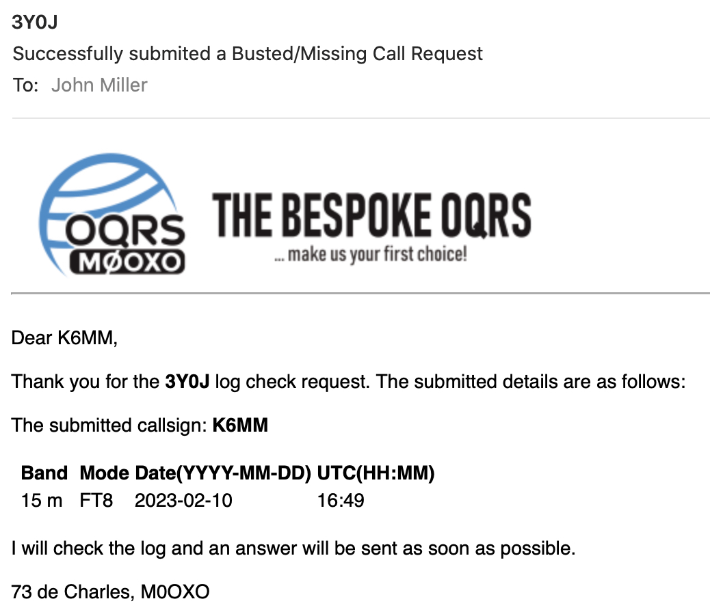

| It appears they’ve dropped that “no exception” rule for digital QSOs. https://www.3y0j.no/qsl-policy I used their “Not in Log” form on OQRS to report a missing 15M FT8 QSO. And got an acknowledgement almost immediately (see attachment). You can fill out the form with your missing QSO(s) data — or upload an ADIF file from you master WSJT-X directory. In addition — using the TEXT box at the bottom of the form — I included a link to a screen snapshot of my QSO: My proper F/H QSO was 10-February at 1649 UTC. I called him at 1100 Hz and he moved me to 343-282 Hz. I’ll let you know if I hear anything: (+) or (-) 73 John, K6MM 
|